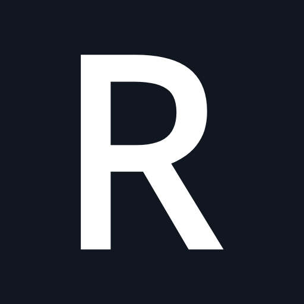

 helloryan
I am a generalist by nature and by choice. My curiosity drives me to explore systems, tools, and processes, whether in software, photography, or building with Lego. I enjoy understanding how things work, identifying patterns, and finding ways to make complex systems predictable and reliable.
Professionally, I design and build software systems across multiple domains and platforms. But my pride in craft goes beyond coding. In Swedish, yrkesstolthet captures what motivates me: a dedication to doing things well, understanding the implications of every decision, and leaving work in a state better than I found it. This discipline shapes everything I do—from designing architectures and writing tests to documenting systems and refining processes.
Outside of software, creativity plays an equally important role in my life. Photography lets me explore light, composition, and timing—skills that require patience, observation, and technical understanding. Lego and video games are more than hobbies; they are exercises in problem-solving, spatial reasoning, and system design. All of these pursuits reflect the same curiosity and drive for mastery that guide my professional work.
I approach challenges with thoughtfulness, rigor, and a sense of curiosity. Whether it is designing a new software system, capturing a moment through a lens, or constructing a complex model, I aim for clarity, intentionality, and quality in everything I create.